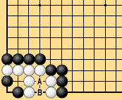
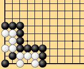
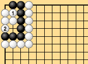
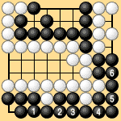
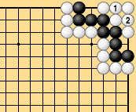

|
| Dias. 2-17-1 and 2-17-2 are often cited in relation to counting territory in a seki. The points at A and B in Dia. 2-17-1 are White's territory, and he can play on either one without loss. That much is clear, but the Japanese rules do not count territory in a seki. Defining seki rigorously is surprisingly difficult, and the problem of seki presents an important, basic choice to be made in formulating the rules. |
|  |  |
| Dia. 2-17-1 | Dia. 2-17-2 |
|---|
| A similar problem concerns one-sided neutral points such as the numbered points in Dias. 2-18-1, 2-18-2, and 2-18-3. Only White can occupy the two points in Dia. 2-18-1 without loss. In Dias. 2-18-2 and 2-18-3 the question is whether the false eyes should be considered territory or one-sided neutral points that only one player can occupy. In area rules these points all count toward the score of the player who occupies them. |
|  |  |
| Dia. 2-18-1 | Dia. 2-18-2 |
|---|---|
|  | |
| Dia. 2-18-3 |
| The issue of whether to count territory in a seki or to count one-sided neutral points should be noted as a key issue in the rules. It separates those who want to define life, death, and seki from those who want to write the rules without these definitions. In writing rules that count territory and prisoners, this is the most important issue. |